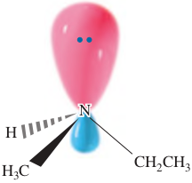

The geometry of a nitrogen atom bonded to three other atoms or groups of atoms is trigonal pyramidal (Section 1.4). The sp3-hybridized nitrogen atom is at the apex of the pyramid, and the three groups bonded to it extend downward to form the triangular base of the pyramid. If we consider the unshared pair of electrons on nitrogen as a fourth group, then the arrangement of “groups” around nitrogen is approximately tetrahedral. Because of this geometry, an amine with three different groups bonded to nitrogen is chiral and can exist as a pair of enantiomers, as illustrated by the nonsuperposable mirror images of ethylmethylamine. In assigning confi guration to these enantiomers, the group of lowest priority on nitrogen is the unshared pair of electrons.

(S)-Ethylmethylamine(R)-Ethylmethylamine
In principle, a chiral amine should be resolvable; that is, it should be separable into a pair of enantiomers. Except for special cases, however, the enantiomers cannot be resolved because they undergo rapid interconversion by a process known as pyramidal inversion. Pyramidal inversion is the rapid oscillation of a nitrogen atom from one side of the plane of the three atoms bonded to it to the other side of that plane. To visualize this process, imagine the sp3-hybridized nitrogen atom lying above the plane of the three atoms to which it is bonded. In the transition state for pyramidal inversion, the nitrogen atom and the three groups to which it is bonded become coplanar, and the molecule becomes achiral. In this planar transition state, nitrogen is sp2 hybridized, and its lone pair of electrons lies in its unhybridized 2p orbital. Nitrogen then completes the inversion, becomes sp3 hybridized again, and now lies below the plane of the three atoms to which it is bonded.
(S)-Ethylmethylamine
⇌
⇌
(R)-Ethylmethylamine
As a result of pyramidal inversion, a chiral amine quite literally turns itself inside out, like an umbrella in a strong wind, and in the process becomes a racemic mixture. The activation energy for pyramidal inversion of simple amines is about 25 kJ (6 kcal)/mol. For ammonia at room temperature, the rate of nitrogen inversion is approximately 2 x 1011 s−1. For simple amines, the rate is less rapid but nonetheless suffi cient to make resolution impossible.
Pyramidal inversion is not possible for
Quaternary ammonium ions, and their salts (so thye can be resolved)
Phosphorus, in the same family as nitrogen, forms trivalent compounds called phosphines, which also have trigonal pyramidal geometry. The activation energy for pyramidal inversion of trivalent phosphorus compounds is considerably greater than it is for trivalent compounds of nitrogen, with the result that a number of chiral phosphines have been resolved.